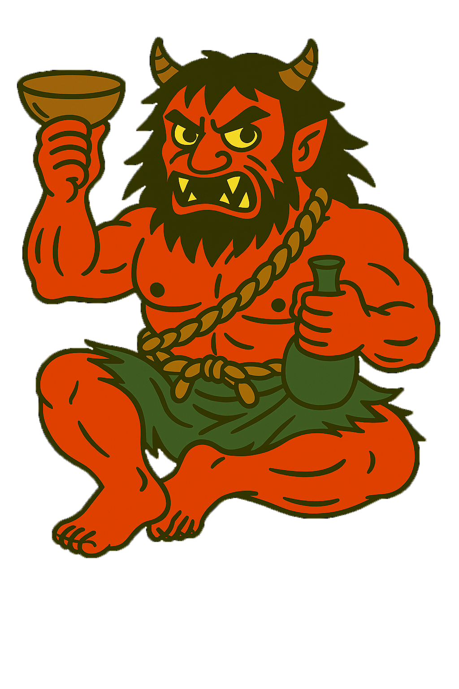

近畿地方
酒呑童子
（しゅてんどうじ）

酒呑童子（しゅてんどうじ）は、大江山にすんでいた鬼たちの頭で、人さらいや盗みをくり返していた。
源頼光とその四天王たちが、山伏にばけて鬼の城にしのびこみ、毒酒で酔わせて退治。
この話は『大江山絵巻』や『御伽草子』（おとぎぞうし）などで語られ、能や歌舞伎でも人気の演目になっている。
伝説では、童子の出身地にさまざまな説があり、新潟や滋賀にも話が伝わっている。
いまもお祭りや展示などで、多くの人に親しまれている有名な鬼。
また伊吹山の麓でスサノオとの戦いに敗れた八岐大蛇（ヤマタノオロチ）が出雲国から近江へと落ち延び、
そこで富豪の娘に産ませたのが酒呑童子であり、幼少期は絶世の美少年であったため多くの女性に恋され恋文をもらったが、
貰った恋文を読みもせず全て焼いてしまったところ、想いを伝えられなかった女性の恋心が煙となって、
彼の周りを取り囲み、その怨念によって鬼になったという伝承もある。
強さレベル

ダイダラボッチ
ダイダラボッチは、とても大きな巨人。
その巨人が土をほって富士山を作り、穴が空いた跡が琵琶湖（びわこ）になったといわれている。
滋賀県と富士山のある町は、この話がきっかけで姉妹都市提携した。
今でも「おみずとり」や「おみずかえし」という行事が行われている。
強さレベル